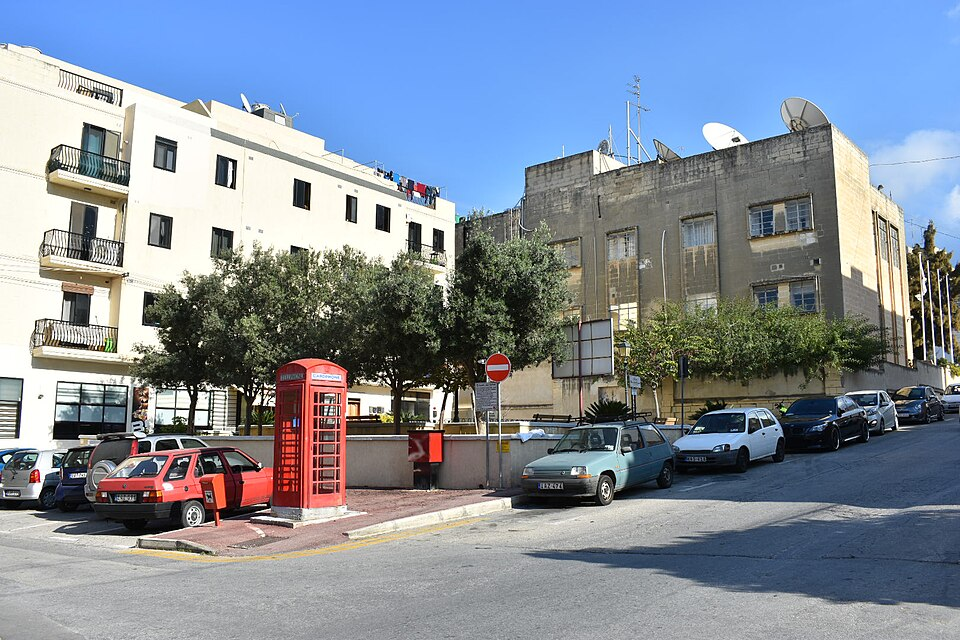

Αν έχεις πληκτρολογήσει iptv online free στο Google, μάλλον ψάχνεις έναν τρόπο να δεις ελληνικά κανάλια στο κινητό, στην τηλεόραση ή στον υπολογιστή σου χωρίς να πληρώσεις συνδρομή. Είναι μια απολύτως λογική αναζήτηση: οι τιμές των πακέτων αυξάνονται, οι πλατφόρμες πολλαπλασιάζονται και κανείς δεν θέλει να πληρώνει για κάτι που δεν έχει δοκιμάσει.
Η πραγματικότητα όμως έχει αποχρώσεις. Το διαδίκτυο είναι γεμάτο «δωρεάν» λίστες, εφαρμογές και συνδέσμους που υπόσχονται χιλιάδες κανάλια. Οι περισσότεροι από αυτούς δουλεύουν για λίγες ώρες, έχουν κακή ποιότητα εικόνας και, το χειρότερο, μπορεί να εκθέσουν τη συσκευή και τα προσωπικά σου δεδομένα σε κινδύνους.
Σε αυτόν τον οδηγό θα δεις τι σημαίνει πραγματικά δωρεάν IPTV, πού μπορείς να βρεις νόμιμες επιλογές, ποιοι είναι οι κίνδυνοι των ανεπίσημων λιστών και πότε αξίζει να επιλέξεις μια αξιόπιστη υπηρεσία όπως το greek iptv. Θα δεις επίσης πρακτικές συμβουλές για σταθερή ροή και τις απαντήσεις στις πιο συχνές ερωτήσεις.
Περιεχόμενα
- Τι Σημαίνει IPTV Online Free
- Πού Μπορείς να Βρεις Δωρεάν Κανάλια Online
- Δωρεάν IPTV vs Επί Πληρωμή: Η Σύγκριση
- Οι Κίνδυνοι των Ανεπίσημων Λιστών
- Πώς να Δεις Ελληνική Τηλεόραση Online Ασφαλώς
- Ποιες Συσκευές Υποστηρίζουν IPTV Online
- Ελληνικό Περιεχόμενο: Τι Θα Βρεις
- Πώς να Επιλέξεις Αξιόπιστο Πάροχο IPTV
- Νομιμότητα και Υπεύθυνη Χρήση
- Συμβουλές για Σταθερή Ροή
- Συχνές Ερωτήσεις
- Συμπέρασμα
Τι Σημαίνει IPTV Online Free
Ο όρος iptv online free περιγράφει υπηρεσίες που σου επιτρέπουν να βλέπεις τηλεοπτικά κανάλια μέσω internet χωρίς να πληρώνεις συνδρομή. Στην πράξη καλύπτει τρεις διαφορετικές κατηγορίες: τα νόμιμα κανάλια που προβάλλουν δωρεάν το πρόγραμμά τους μέσω των επίσημων ιστοσελίδων και εφαρμογών τους, τις διαφημιζόμενες υπηρεσίες με περιορισμένο περιεχόμενο και τις ανεπίσημες λίστες που κυκλοφορούν στο διαδίκτυο. Η διαφορά ανάμεσά τους είναι τεράστια σε ποιότητα, σταθερότητα και ασφάλεια.
Πώς Λειτουργεί το IPTV
Το IPTV (Internet Protocol Television) μεταφέρει το τηλεοπτικό σήμα μέσω του internet αντί για κεραία ή δορυφόρο. Ο διακομιστής στέλνει τη ροή, η εφαρμογή στη συσκευή σου την αποκωδικοποιεί και εσύ βλέπεις το κανάλι σε πραγματικό χρόνο. Αυτό σημαίνει ότι η εμπειρία εξαρτάται από δύο πράγματα: την ποιότητα της πηγής και την ταχύτητα της σύνδεσής σου.
Τι Εννοούν οι Χρήστες με τον Όρο
Οι περισσότεροι που αναζητούν δωρεάν IPTV θέλουν το ίδιο πράγμα: ελληνικά κανάλια, αθλητικά, ειδήσεις και σειρές, χωρίς μηνιαία χρέωση. Είναι λογικό να θέλεις να δοκιμάσεις πριν πληρώσεις, και αυτό ακριβώς είναι το σημείο που θα αναλύσουμε παρακάτω: τι μπορείς να βρεις πραγματικά χωρίς κόστος και πότε αξίζει να περάσεις σε μια αξιόπιστη υπηρεσία.
Πού Μπορείς να Βρεις Δωρεάν Κανάλια Online
Υπάρχουν νόμιμοι τρόποι να δεις ελληνική τηλεόραση χωρίς συνδρομή, αρκεί να γνωρίζεις τι ακριβώς προσφέρουν και ποιοι είναι οι περιορισμοί τους.
Επίσημες Ιστοσελίδες και Εφαρμογές των Καναλιών
Αρκετά ελληνικά κανάλια μεταδίδουν ζωντανά το πρόγραμμά τους στο site ή στην εφαρμογή τους, ιδίως τα δελτία ειδήσεων. Η πρόσβαση είναι συχνά περιορισμένη γεωγραφικά, οπότε αν ζεις στο εξωτερικό μπορεί να μη λειτουργεί. Επίσης, ο κατάλογος περιορίζεται σε ένα μόνο κανάλι ανά πλατφόρμα και όχι σε ολόκληρη λίστα.
Πλατφόρμες με Διαφημίσεις
Υπάρχουν υπηρεσίες που χρηματοδοτούνται από διαφημίσεις και προσφέρουν επιλεγμένα κανάλια ή ταινίες. Η ποιότητα είναι αποδεκτή, όμως ο ελληνικός κατάλογος είναι περιορισμένος και οι διακοπές για διαφημίσεις συχνές.
Δωρεάν Δοκιμές από Παρόχους
Πολλοί πάροχοι προσφέρουν σύντομη δοκιμή, ώστε να ελέγξεις την ποιότητα πριν αποφασίσεις. Είναι η πιο ασφαλής μορφή «δωρεάν» IPTV, γιατί δοκιμάζεις την πραγματική υπηρεσία. Αν θέλεις να δεις πώς δουλεύει μια πλήρης λύση, μπορείς να ξεκινήσεις από το greek iptv.

Δωρεάν IPTV vs Επί Πληρωμή: Η Σύγκριση
Το «δωρεάν» έχει πάντα κάποιο αντίτιμο, είτε σε χρόνο, είτε σε ποιότητα, είτε σε ασφάλεια. Ο παρακάτω πίνακας συνοψίζει τις βασικές διαφορές.
| Κριτήριο | Δωρεάν λίστες | Greek IPTV |
|---|---|---|
| Σταθερότητα | Χαμηλή, συχνές διακοπές | Υψηλή, σταθεροί διακομιστές |
| Ελληνικά κανάλια | Λίγα και ασταθή | +30.000 κανάλια |
| Ταινίες και σειρές | Σπάνια διαθέσιμες | +150.000 τίτλοι |
| Υποστήριξη | Καμία | Υποστήριξη πελατών |
| Ασφάλεια | Άγνωστη προέλευση | Επαγγελματική υπηρεσία |
| Κόστος | €0 | Από €10.99/μήνα |
Το Κρυφό Κόστος του Δωρεάν
Μια λίστα που δουλεύει σήμερα μπορεί να σταματήσει αύριο, ακριβώς την ώρα του αγώνα ή της αγαπημένης σου σειράς. Αν χάνεις χρόνο να ψάχνεις νέους συνδέσμους κάθε εβδομάδα, το πραγματικό κόστος είναι η απογοήτευση και η χαμένη ώρα.
Πότε Αρκεί το Δωρεάν
Αν θες μόνο να δεις περιστασιακά ένα δελτίο ειδήσεων, τα επίσημα streams των καναλιών είναι αρκετά. Αν όμως θέλεις καθημερινή, σταθερή παρακολούθηση πολλών καναλιών, μια επαγγελματική συνδρομή είναι η λογική επιλογή.
Οι Κίνδυνοι των Ανεπίσημων Λιστών
Οι ανεπίσημες λίστες που κυκλοφορούν σε φόρουμ και ιστοσελίδες έχουν σοβαρά μειονεκτήματα που πολλοί χρήστες αγνοούν.
Ασφάλεια Συσκευής και Δεδομένων
Εφαρμογές και αρχεία από άγνωστες πηγές μπορεί να περιέχουν κακόβουλο λογισμικό ή διαφημιστικά προγράμματα. Εγκατάσταση APK εκτός επίσημου καταστήματος αυξάνει τον κίνδυνο, ιδίως σε συσκευές Android που χρησιμοποιούνται και για τραπεζικές εφαρμογές.
Νομικά Ζητήματα
Πολλές δωρεάν λίστες προβάλλουν περιεχόμενο χωρίς άδεια. Ως χρήστης, είναι σημαντικό να γνωρίζεις τους κανόνες της χώρας σου και να προτιμάς υπηρεσίες με σαφείς όρους χρήσης.
Αστάθεια και Έλλειψη Υποστήριξης
Όταν ένα κανάλι σταματά, δεν υπάρχει κανείς να ρωτήσεις. Δεν υπάρχει εγγύηση, αντικατάσταση ή οδηγός προγράμματος που να ενημερώνεται. Για περισσότερες λεπτομέρειες σχετικά με τέτοιες πηγές, διάβασε και το άρθρο μας για τις λίστες M3U από το GitHub.
Πώς να Δεις Ελληνική Τηλεόραση Online Ασφαλώς
Αν θες να ξεκινήσεις με ασφαλή τρόπο, ακολούθησε μια απλή σειρά βημάτων.
Βήμα 1: Έλεγξε τη Σύνδεσή σου
Για HD χρειάζονται περίπου 10 Mbps και για Full HD ή 4K προτείνονται 25 Mbps και πάνω. Όπου γίνεται, προτίμησε καλώδιο Ethernet αντί για Wi-Fi.
Βήμα 2: Διάλεξε Αξιόπιστη Πηγή
Επίλεξε πάροχο με σαφή τιμολόγηση, υποστήριξη και καλές κριτικές. Ένας επαγγελματικός πάροχος σου δίνει στοιχεία πρόσβασης που λειτουργούν σε πολλές συσκευές.
Βήμα 3: Εγκατάστησε Αναγνωρισμένη Εφαρμογή
Κατέβασε αναπαραγωγέα από το επίσημο κατάστημα της συσκευής σου. Για τηλεοράσεις Samsung δες τον οδηγό μας για IPTV σε Samsung Smart TV με Tizen.
Βήμα 4: Πρόσθεσε τη Λίστα και Ρύθμισε το EPG
Εισήγαγε το URL M3U ή τα στοιχεία Xtream και περίμενε να φορτώσουν τα κανάλια και ο οδηγός προγράμματος.

Ποιες Συσκευές Υποστηρίζουν IPTV Online
Η μεγάλη ευελιξία του IPTV είναι ότι δουλεύει σχεδόν παντού.
Smart TV και TV Box
Οι σύγχρονες Smart TV (Samsung, LG, Android TV) και οι συσκευές όπως το Fire TV Stick ή τα Android box υποστηρίζουν εφαρμογές IPTV. Είναι η πιο άνετη λύση για το σαλόνι.
Κινητά και Tablet
Με μια εφαρμογή αναπαραγωγής βλέπεις τα κανάλια σε Android ή iPhone οπουδήποτε υπάρχει σύνδεση, ιδανικό για ταξίδια και για Έλληνες του εξωτερικού.
Υπολογιστής
Σε Windows, Mac και Linux μπορείς να χρησιμοποιήσεις player όπως VLC ή εξειδικευμένες εφαρμογές IPTV. Είναι χρήσιμο για εργασία σε δύο οθόνες ή για παρακολούθηση αγώνων στο γραφείο.
Ελληνικό Περιεχόμενο: Τι Θα Βρεις
Για όσους ζουν εκτός Ελλάδας, το ελληνικό πρόγραμμα είναι ο βασικός λόγος να ψάχνουν IPTV. Με μια πλήρη υπηρεσία έχεις πρόσβαση σε:
- Ειδήσεις: τακτικά δελτία και ενημερωτικές εκπομπές
- Αθλητικά: ποδόσφαιρο, μπάσκετ και διεθνείς διοργανώσεις
- Σειρές και ψυχαγωγία: ελληνικές παραγωγές και εκπομπές
- Ταινίες: μεγάλη βιβλιοθήκη κατά παραγγελία
- Παιδικά: προγράμματα για όλες τις ηλικίες
Γιατί το Greek IPTV
Το greek iptv έχει σχεδιαστεί για ελληνόφωνο κοινό: ελληνικός κατάλογος, γρήγορη ενεργοποίηση και συμβατότητα με όλες τις μεγάλες συσκευές. Για την ελληνική αγορά, δες επίσης την ανάλυσή μας για IPTV και Nova στην Ελλάδα.
Εναλλακτικές Αγορές
Αν σε ενδιαφέρουν και κανάλια από άλλες χώρες, υπάρχουν εξειδικευμένοι πάροχοι όπως το tilaa iptv ή το romania iptv. Για ελληνικό περιεχόμενο όμως, μια υπηρεσία φτιαγμένη για Έλληνες δίνει καλύτερο αποτέλεσμα.
Πώς να Επιλέξεις Αξιόπιστο Πάροχο IPTV
Η επιλογή παρόχου είναι η σημαντικότερη απόφαση, γιατί από αυτήν εξαρτάται κάθε μέρα της εμπειρίας σου. Πριν πληρώσεις οτιδήποτε, έλεγξε τα παρακάτω κριτήρια.
Λίστα Ελέγχου Πριν την Αγορά
- Σαφής τιμολόγηση: η τιμή, η διάρκεια και οι όροι αναγράφονται καθαρά, χωρίς κρυφές χρεώσεις.
- Υποστήριξη: υπάρχει τρόπος επικοινωνίας και απάντηση σε εύλογο χρονικό διάστημα.
- Ποικιλία συσκευών: η συνδρομή δουλεύει σε τηλεόραση, κινητό και υπολογιστή.
- Οδηγός προγράμματος (EPG): ενημερωμένος, με σωστές ώρες και τίτλους.
- Σταθερότητα: σύγχρονοι διακομιστές που αντέχουν ώρες αιχμής, όπως οι αγώνες.
Προειδοποιητικά Σημάδια
Αν ένας πάροχος υπόσχεται απίστευτα χαμηλές τιμές για «όλα τα κανάλια του κόσμου», ζητά πληρωμή με ασαφείς τρόπους ή δεν παρέχει καμία επικοινωνία, είναι προτιμότερο να το αποφύγεις. Η αξιοπιστία χτίζεται με διαφάνεια και σταθερή υπηρεσία, όχι με υπερβολικές υποσχέσεις.
Δοκίμασε Πριν Δεσμευτείς
Ξεκίνα από μικρότερο πακέτο ή από μηνιαία συνδρομή. Έτσι ελέγχεις την ποιότητα στις δικές σου συνθήκες, με το δικό σου internet και τις δικές σου συσκευές, χωρίς μακροχρόνια δέσμευση. Αυτός είναι ο πιο ασφαλής τρόπος να αντικαταστήσεις το «δωρεάν» με κάτι που πραγματικά δουλεύει.
Νομιμότητα και Υπεύθυνη Χρήση
Η νομιμότητα του IPTV εξαρτάται από την πηγή του περιεχομένου και από τη νομοθεσία της χώρας όπου ζεις. Η ίδια η τεχνολογία είναι νόμιμη και χρησιμοποιείται παγκοσμίως από τηλεπικοινωνιακούς παρόχους και πλατφόρμες streaming.
Τι Να Ελέγξεις
Διάβασε τους όρους χρήσης του παρόχου, ενημερώσου για τους κανόνες της χώρας σου και απόφυγε υπηρεσίες που δεν παρέχουν καμία πληροφορία για τη λειτουργία τους. Το να γνωρίζεις τι χρησιμοποιείς είναι ο καλύτερος τρόπος προστασίας.
Προστασία Προσωπικών Στοιχείων
Μη μοιράζεσαι τα στοιχεία πρόσβασης, χρησιμοποίησε ισχυρούς κωδικούς και απόφυγε να εισάγεις στοιχεία πληρωμής σε άγνωστες ιστοσελίδες. Αν χρησιμοποιείς VPN, βεβαιώσου ότι δεν επιβραδύνει υπερβολικά τη σύνδεσή σου.
Συμβουλές για Σταθερή Ροή
Ακόμη και με την καλύτερη υπηρεσία, μερικές μικρές ρυθμίσεις κάνουν τη διαφορά.
Βελτίωσε το Δίκτυο
Τοποθέτησε το router κοντά στη συσκευή, χρησιμοποίησε τη ζώνη 5 GHz και απόφυγε βαριές λήψεις την ώρα που βλέπεις τηλεόραση.
Ενημέρωσε Συσκευή και Εφαρμογή
Οι νέες εκδόσεις διορθώνουν σφάλματα και βελτιώνουν τη συμβατότητα με τις ροές βίντεο. Καθάριζε τακτικά την cache της εφαρμογής.
Λύσεις στα Συνηθισμένα Προβλήματα
Αν έχεις buffering, δοκίμασε Ethernet και έλεγξε την ταχύτητά σου. Αν δεν φορτώνει η λίστα, επιβεβαίωσε ότι το URL ή τα στοιχεία είναι σωστά και η συνδρομή ενεργή. Αν κολλάει η εφαρμογή, κάνε επανεκκίνηση συσκευής ή επανεγκατάσταση.
Έτοιμος να περάσεις σε σταθερή τηλεόραση χωρίς εκπλήξεις; Δες τα πακέτα στο Greek IPTV και ξεκίνα σε λίγα λεπτά.